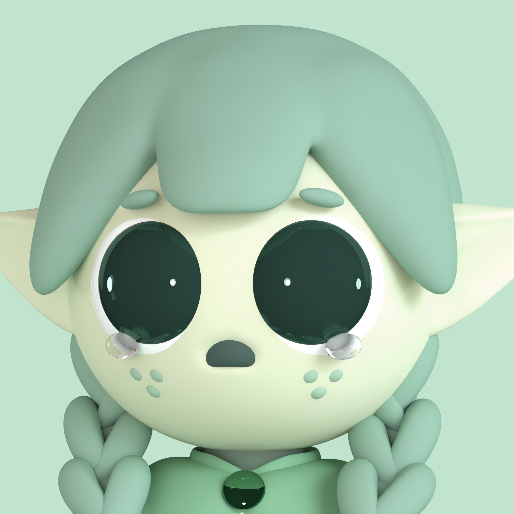
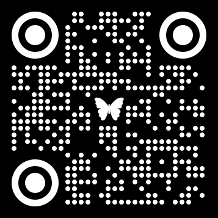
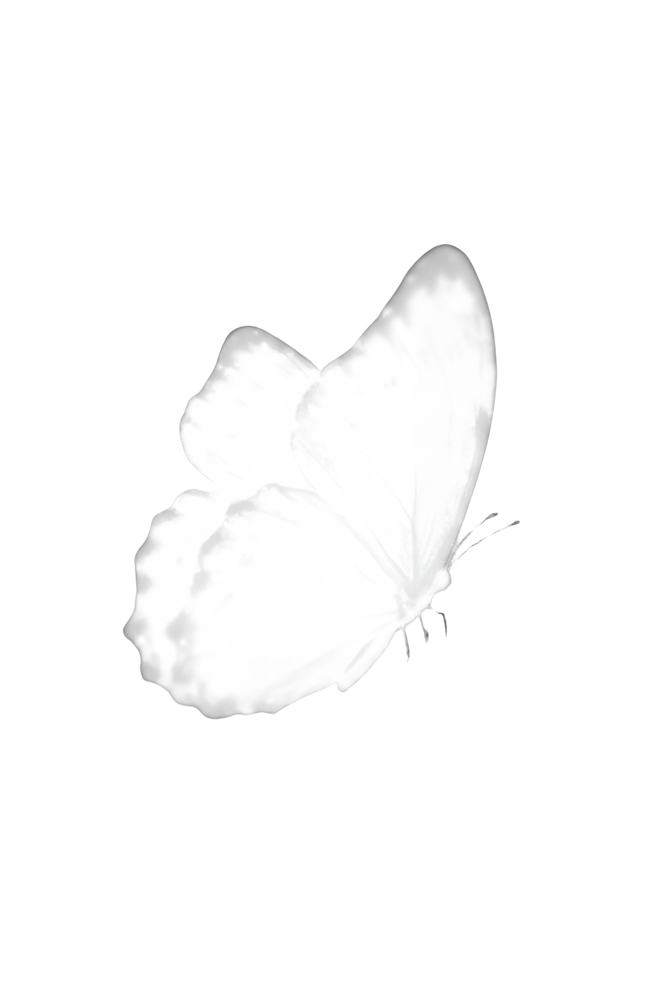

나비 둘러보기
위아래로 스크롤
날개를 접고 홀로 웅크렸던 시간들. 온전한 ‘나다움’의 숨을 고를 수 있는 쉼터로서 이 여정은 시작되었습니다.
내면의 깊은 결을 탐구하고 온전한 나 자신을 마주하며, 세상에 둘도 없는 나만의 나비를 빚어 허공으로 날려 보냅니다. 날아오른 나비는 홀로 머물지 않고 깊은 공간 속으로 스며들어, 이미 그곳을 유영하던 수많은 나비들과 만나 거대한 ‘너울’을 이룹니다. 저마다의 고유한 존재들이 모여 눈부신 파도를 만들어내는 연대의 순간입니다.
넘실거리는 빛의 유영을 향해 조용히 손을 뻗어봅니다. 손끝을 향해 날갯짓들이 눈부시게 모여들고, 손바닥을 펼치는 찰나 푸른 파동을 그리며 공간 전체로 은은하게 번져나갑니다. 허공을 자유롭게 부유하는 작은 생명들과 살결 닿듯 나누는 교감은, 나의 작은 손짓이 타인의 궤적에 가닿아 따스한 파동을 일으킬 수 있음을 느끼게 합니다.
이곳에 남겨진 나비들은 저마다의 자아를 품은 채 머물며 또 다른 이에게 온기를 건냅니다. 〈너울〉은 조금 늦더라도, 조금 서툰 날갯짓일지라도 괜찮다고 다정하게 속삭입니다. 공간을 가득 채운 빛의 유영 속에서 비로소 마주한 스스로를 긍정하고, 말 없는 온기를 나누며 다시 일상으로 걸어갈 단단한 힘을 얻기를 바랍니다.
〈너울〉의 여정에 함께하며 든든한 버팀목이 되어주신 분들께 깊이 감사드립니다.

오랜만 작가님
3D 디자인 모델링
NeonSketch
음원 제공
너울
관람 순서
COLORING
방법1. 도안 채색
7가지 도안 중 하나를 고르세요.
도안을 채색하세요.
QR 코드를 스캔해 사이트로 입장합니다.
방법2. 이미지 삽입
도안 채색 단계를 건너뛰고 QR 코드 스캔 후, 입장합니다.

INTERACTION
속마음 고민을 나눈 뒤, 도안을 촬영합니다.
다정한 한마디와 함께 나비를 띄웁니다.
CONNECTION
미디어월 속으로 날아오른 나비에게 손을 뻗어
날갯짓을 느끼며 교감합니다.
GIFT
준비된 전시 굿즈를 챙겨가세요.

작성한 내용은 전시에 공개됩니다.
작성한 이름은 전시에 공개됩니다. 익명으로 적어주세요.
(단일선택) [좌우 스크롤]
이것을 선택한 이유는 무엇인가요?
작성한 내용은 익명으로 전시에 공개됩니다.
가장 많이 선택된 키워드
당신이 고른 키워드 : 완벽주의 강박

종이 정면 위에서 수직으로 찍어주세요
기울어지지 않도록 스마트폰을 도안과 평행하게
정면 위에서 촬영해 주세요.
날개 형태 고르기
[드래그] 이동, [두 손가락 핀치] 확대/축소
나비를 깨우는 중
당신이 건넨 마음의 조각들을 하나씩 새겨 넣고 있어요.
‘나비’
화면을 길게 눌러 기를 모은 뒤 위로 날려보내세요.
